In this UAV swarm project, we developed an autonomous, decentralized micro-UAV swarm platform engineered for rapid disaster assessment in communication-denied environments—combining onboard TinyML computer vision inference with peer-to-peer ESP-NOW mesh networking.
STM32F405 (168MHz FPU) + ESP32-S3 (240MHz SIMD)
Quantized Int8 MobileNetV2 with >94.7% accuracy
>95% packet delivery rate via ESP-NOW ad-hoc mesh
Custom 4-layer PCB with Faraday ground shielding
Conventional autonomous drone architectures rely on bulky companion computers (Raspberry Pi or Nvidia Jetson) weighing 45g+ and drawing 5–15W. Our architecture decouples deterministic real-time flight stabilization from high-level TinyML computer vision across two dedicated microcontrollers on a single board.
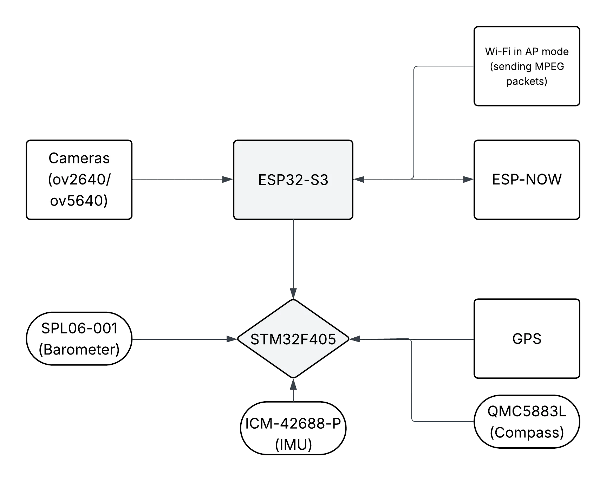
Fig. 1.1Dedicated 57,600 baud MAVLink UART bridge separating deterministic 400Hz flight loops from edge AI inference.
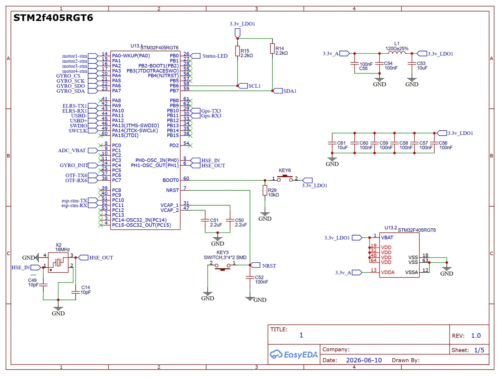
Fig. 1.2LQFP-64 pinout showing 16MHz/32.768kHz crystals, 24MHz SPI bus for ICM-42688-P IMU, and I2C barometer.
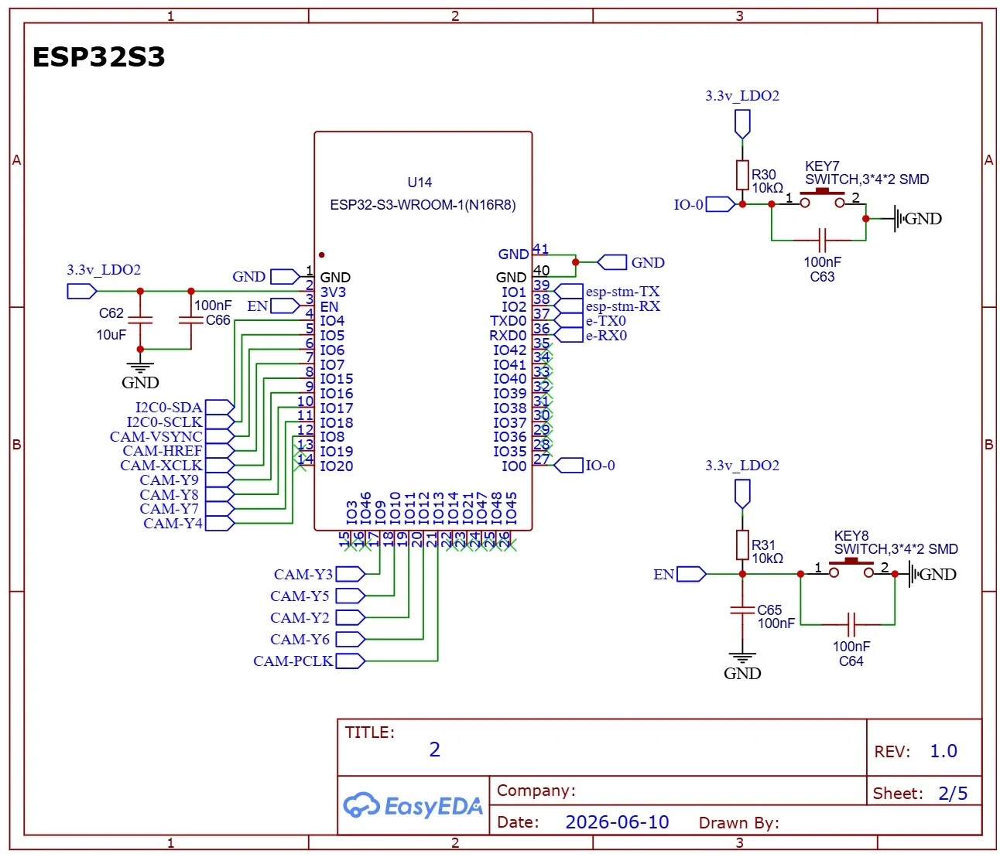
Fig. 1.3DVP camera bus wiring, octal PSRAM connections, and isolated 3.3V power domain to prevent RF noise injection.
On the ESP32-S3, the camera Direct Memory Access (DMA) and the WiFi DMA controller share the internal Advanced High-performance Bus (AHB). Running concurrent camera capture and WiFi transmissions causes severe DMA starvation and frame corruption. Our firmware implements a camera-suspend gating protocol: camera capture is executed on Core 1, and the camera peripheral is deinitialized before enabling the WiFi MAC for ESP-NOW packet broadcasting (~80 ms cycle overhead), completely eliminating DMA bus artifacts.
| CPU Core | Task Name | Priority | Stack / Buffer | Subsystem Responsibility |
|---|---|---|---|---|
| Core 1 | cam_pump | 15 (Highest) | 4 KB + DMA | DVP camera frame capture from OV2640 sensor into internal memory |
| Core 1 | infer | 4 (Medium) | 32 KB PSRAM | TensorFlow Lite Micro / Edge Impulse MobileNetV2 INT8 inference |
| Core 0 | wifi_ap | 23 (Real-time) | 8 KB | SoftAP web server & connectionless ESP-NOW mesh packet dispatcher |
| Core 0 | mav_rx | 7 (High) | 4 KB RingBuffer | UART MAVLink v2 frame decoding (heartbeat, attitude, GPS, battery) |
| Core 0 | mav_hb | 3 (Low) | 2 KB | State machine heartbeat emission & command injection to ArduPilot |
Rather than offloading video streams to high-power cloud or ground servers—which fail in infrastructure-denied disaster environments—all computer vision models execute locally on the ESP32-S3. Models are trained using transfer learning on MobileNetV2 and quantized to Int8 using post-training quantization.
Trained on 3,762 disaster aerial and ground images across three discrete classes: Fire, Smoke, and Normal Background. Evaluates incoming frames to pinpoint active ignition fronts and smoke plumes from altitudes of 5 to 15 meters.
Transfer-learned binary detector trained on 3,000 images (Person vs. No Person). Engineered to locate trapped survivors in rubble, floodwaters, and collapse zones during autonomous aerial reconnaissance at altitudes up to 10 meters.
Empirical validation results extracted directly from Table I of our published research paper, highlighting sub-400ms edge latency within 220 KB peak RAM consumption:
| Model Pipeline | Input Resolution | Quantization | Flash Size | Inference Time | Peak RAM | Accuracy |
|---|---|---|---|---|---|---|
| Fire & Smoke Detection | 96 × 96 RGB | Int8 Post-Training | 319 KB | 290 ms | 198 KB | 94.7% (F1: 73.6%) |
| Human Survivor Detection | 96 × 96 RGB | Int8 Post-Training | 321 KB | 387 ms | 212 KB | 95.2% (F1: 73.7%) |
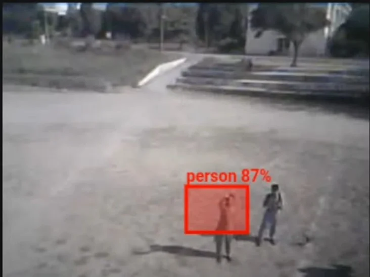
Fig. 2.1Live HUD capture during autonomous hover over target personnel with real-time bounding box overlay.
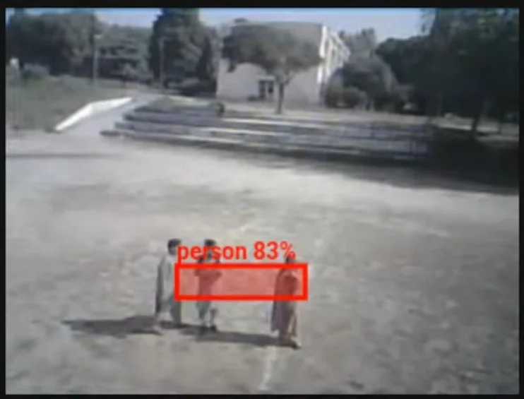
Fig. 2.2Simultaneous multi-target detection in outdoor open-field trials demonstrating spatial cluster resolution.
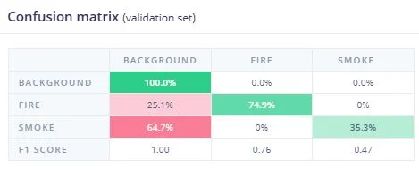
Fig. 2.3Edge Impulse validation proving 100% background precision (0% false alarms) and 93.7% multi-pass fire recall.
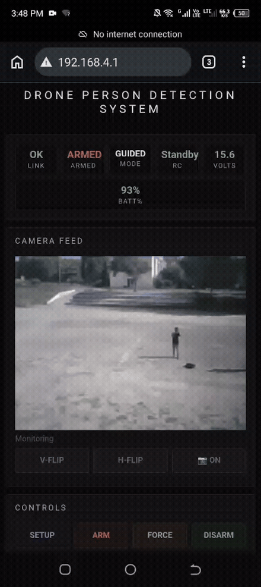
Demo 2.4 (GIF)Live video stream showing on-device INT8 MobileNetV2 inference operating continuously at 1.5 FPS.
Disasters destroy cell towers and internet infrastructure. Our platform relies on connectionless peer-to-peer ESP-NOW packets operating on 2.4 GHz Channel 1, bypassing the association overhead, handshake latency, and range limits of conventional Wi-Fi access points.
Two-node inter-drone communication was tested at distances from 10m to 150m in an open-field environment during live flight. The mesh maintained >95% packet delivery rate up to 125 meters line-of-sight at 500 ms broadcast intervals. Beyond 125m, packet loss exceeded 20%, establishing the effective single-hop mesh boundary.
Each ESP-NOW frame packs compressed GPS coordinates (latitude, longitude, altitude), heading, battery voltage, flight status, and AI detection alert flags (fire confidence, survivor coordinates). Simultaneously, Node 1 acts as a local SoftAP hotspot broadcasting a captive-portal mobile web dashboard, enabling rescue teams on the ground to monitor swarm telemetry on any smartphone or tablet without external software or internet connectivity.
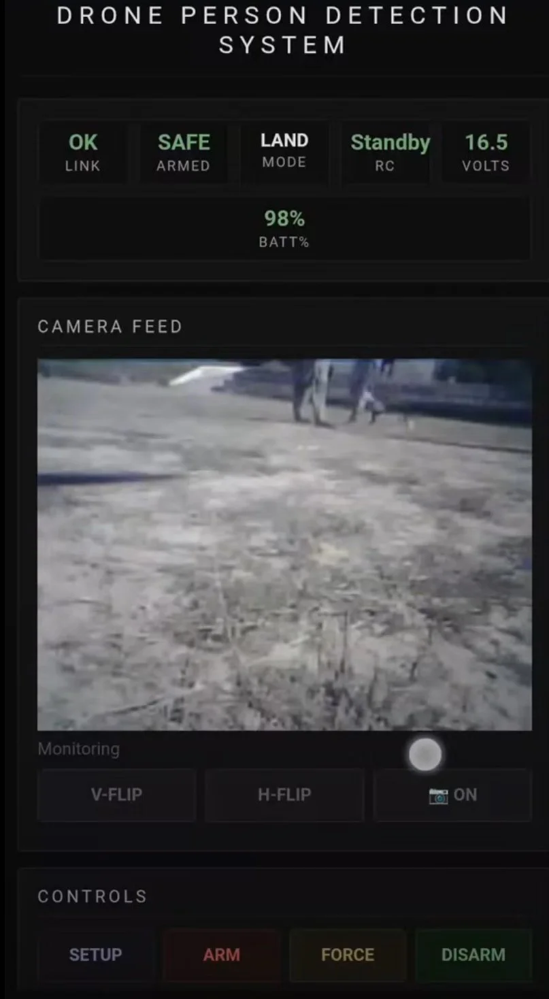
Fig. 3.1Captive-portal web GUI served from ESP32-S3 SoftAP displaying telemetry, HUD video, and arm controls.
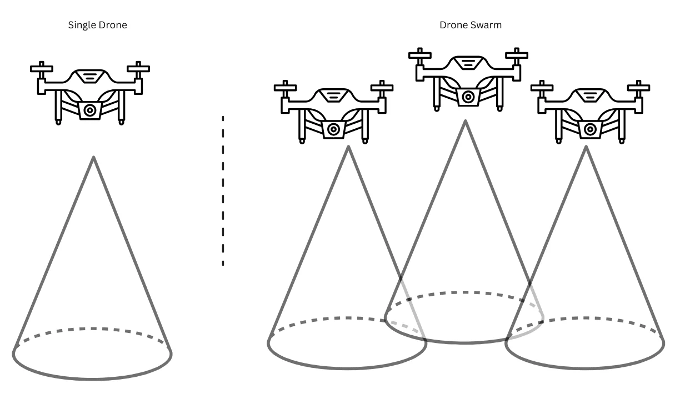
Fig. 3.2Spatial simulation showing linear N-fold search area expansion using decentralized ESP-NOW coordination.
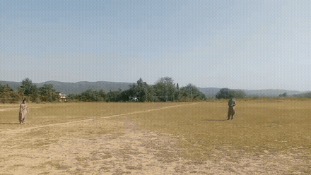
Demo 3.3 (GIF)Real-time telemetry packet interchange between two active flight nodes verified without external Wi-Fi.
To evolve from the F450 validation testbed into an ultra-portable swarm node, the complete avionics suite was miniaturized into a single 4-layer custom printed circuit board integrated with a custom 3D-printed airframe.
Uses a Signal – Ground – Power – Signal layer ordering. Internal solid ground plane provides a continuous return path and isolates high-frequency RF radiation from the sensitive analog IMU traces and barometer.
Accepts 2S–4S LiPo inputs (7.4V–16.8V) through a high-efficiency TI TPS63070 buck-boost converter producing a stable 5V rail. Feeds two independent low-noise 3.3V LDO stages for the STM32 sensor lines and the ESP32-S3 module.
Custom CAD-modeled chassis with 65mm propeller clearance, downward-facing OV2640 camera mount, vibration-damped IMU housing, and onboard TI DRV8837 low-$R_{DS(on)}$ H-bridge motor drivers powering coreless micro-motors.
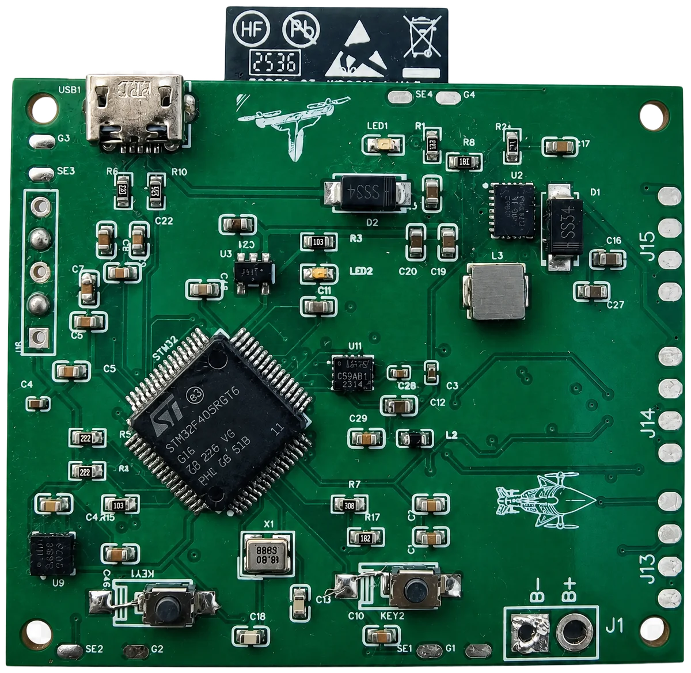
Fig. 4.1Fabricated 4-layer flight controller with STM32F405, ICM-42688-P IMU, and buck-boost power stage.
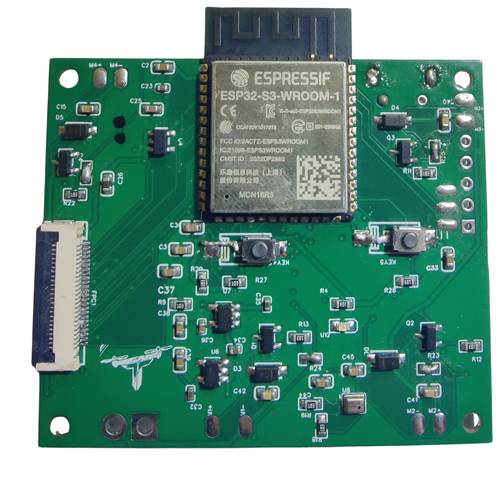
Fig. 4.2Populated ESP32-S3 module with antenna keepout zone and low-noise analog sensor decoupling.
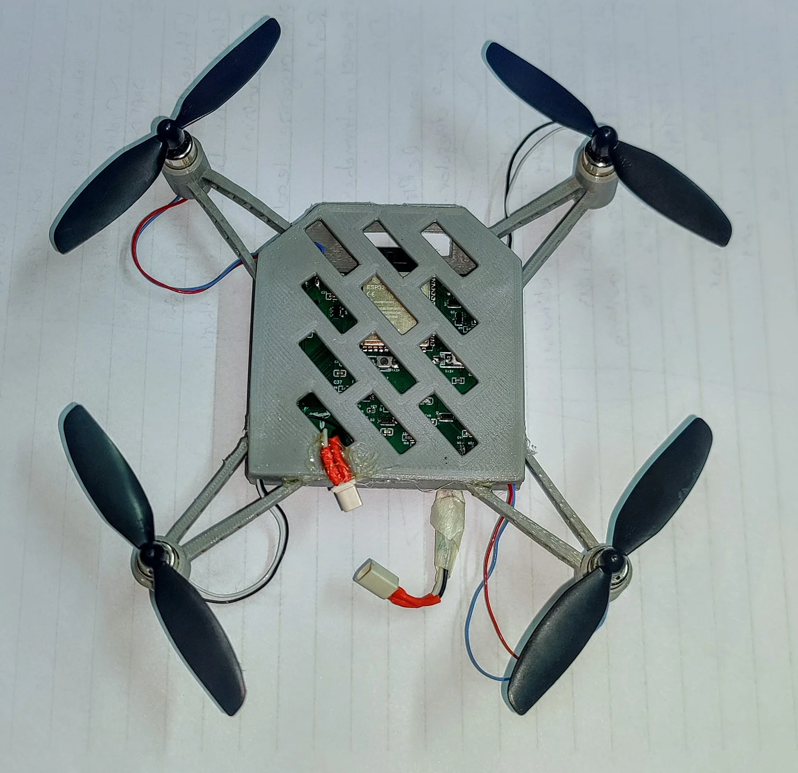
Fig. 4.3Complete physical flight unit integrating custom avionics, 8520 coreless motors, and 65mm props.
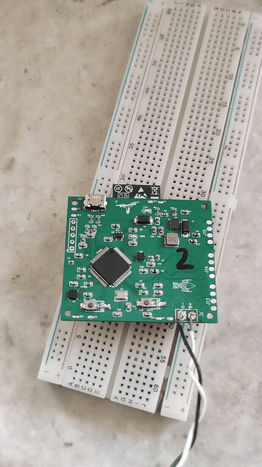
Demo 4.4 (GIF)First electrical bring-up verifying regulated 5V/3.3V rails, bootloader flashing, and status LEDs.
Direct comparative analysis published in Table IV of our research paper, contrasting our integrated Dual-MCU node against standard commercial and experimental drone platforms.
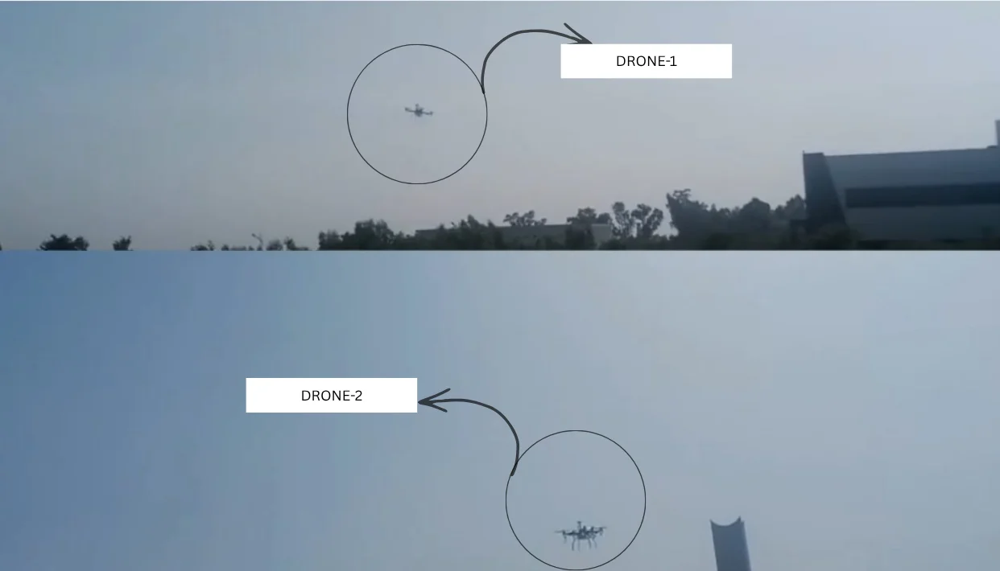
Fig. 5.1F450 multirotor testbed vs custom 18g micro-drone.
| Architecture Characteristic | Bitcraze Crazyflie 2.1 | DJI Tello EDU | Pixhawk + Raspberry Pi | Our Dual-MCU Testbed |
|---|---|---|---|---|
| Open Source Ecosystem | Full Open Source | Closed SDK | Partial Open Source | Full Open Source |
| Onboard Edge AI Inference | External AI deck required | None (Video stream only) | Yes (High-power SBC) | Native INT8 TinyML on ESP32-S3 |
| Inter-Drone Mesh Protocol | Proprietary 2.4 GHz radio | Centralized Wi-Fi AP | External router required | Decentralized ESP-NOW Mesh (125m) |
| Autopilot Firmware Stack | Crazyflie OS | Closed Firmware | ArduCopter / PX4 | Full ArduCopter 4.5.7 Target |
| Companion Computer Weight | N/A | N/A | 45 g (RPi Zero 2W / 4B) | 8 g (Integrated Module) |
| Total Node Hardware Cost | > PKR 60,000 ($220+) | > PKR 35,000 ($130) | > PKR 50,000 ($180+) | < PKR 14,000 (< $50 BOM) |
Complete engineering documentation across all four developmental phases, featuring bench electrical validation, PCB designs, in-flight TinyML tests, and micro-airframe assemblies.
Department of Electrical Engineering, Pakistan Institute of Engineering & Applied Sciences (PIEAS) • SAFSHIKAN
Attitude estimation algorithms, sensor fusion tuning on ICM-42688-P IMU, custom ArduPilot compilation, and flight stability control loops.
Custom 4-layer flight controller PCB design in Altium, power distribution network, inter-processor MAVLink UART bridge, and physical SMD assembly.